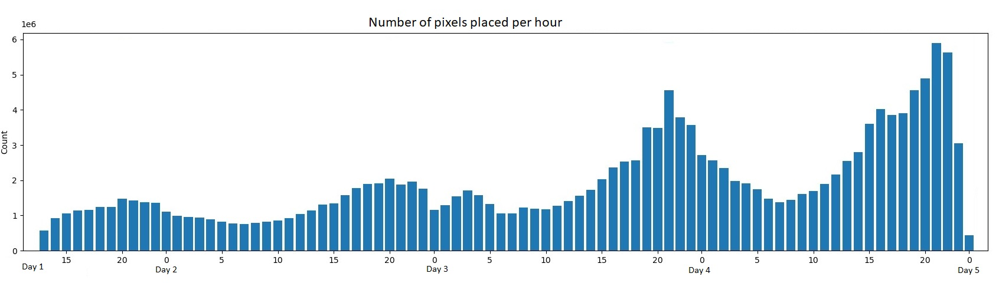

El proyecto trata sobre el análisis del mural de r/place 2022. El r/place es un evento que se creó en el April Fools’ Day del 2017 en Reddit.
El lienzo inicialmente es de 1000 x 1000 píxeles, aunque a lo largo de la duración del evento, su tamaño aumenta hasta los 2000 x 2000 píxeles. Los usuarios pueden cambiar el color de un píxel cada 5 minutos.
Comunidades de distintos ámbitos se organizan para crear imágenes a gran escala como por ejemplo banderas de sus países, monumentos, logos, comida o incluso personajes de series o películas.
En este proyecto se van a estudiar las zonas que más actividad han tenido a través de un mapa de calor, así como los colores más usados y a qué hora hay más actividad. Viendo los dibujos dónde más gente participa se podrá ver qué comunidades son más activos, las zonas más disputadas, cuántos píxeles ha puesto la persona con más actividad en el mural, o si hay zonas que hayan sobrevivido desde el inicio.
Con más de 100 millones de píxeles colocados sobre el mural y más de 10 millones de usuarios únicos, es imposible procesar esta información sin la ayuda de Big Data.
El formato de los datos es csv, han sido obtenidos de la página de Kaggle. La información se divide en: la hora en la que se ha introducido el píxel en formato UTC, el hash del usuario, el color del píxel en formato hexadecimal y las coordenadas. El conjunto de los datos asciende a casi 22 GB.
Puedes hacer click aquí para acceder a los datos.
Aqui podemos ver la cantidad de píxeles que fueron colocados cada hora desde el inicio del evento hasta su fin. La mayor actividad cada día se registra entre las 20:00 y 24:00, y podemos apreciar cómo aumenta la actividad mientras avanza las horas porque cada vez más personas se enteraban de este evento.
Esta gráfica representa las veces que se han colocado cada color durante las 84 horas que ha durado el evento. Hay una gran diferencia entre el blanco y el negro en comparación al resto, acercándose a los 35 millones de píxeles colocados.
Podemos ver que el negro ha dominado por encima de todos los colores, y el blanco lo sigue de muy cerca, concordando con la gráfica anterior. El pico que podemos ver al final es cuando se termina el evento, donde cualquier color que se colocase en el mural, se convertía en blanco.
Estos son los píxeles que más cambios han recibido. La esquina superior izquierda es la más cambiada con diferencia, y una de las razones es porque está presente desde que se inició el evento. Luego podemos observas que las personas les encanta cambiar el centre de los dibujos, porque se nota mucho más que si cambias otra parte. Están también la broma de cambiar la o por la u en el .com de las páginas, que ha sido muy popular.
Como mención honorífica, tenemos la bandera de Canada, que no lograron completar porque los usuarios estaban cambiando todo el rato la hoja de alce de su bandera.
Se han desarrollado los siguientes scripts en Python, para ver los contenidos o descargarlos, dirigirse a la carpeta scripts.
En todos los códigos hay una primera lectura de los argumentos con los que se va a trabajar (inserte csv). Debido a que el csv contiene un encabezado a la hora de leerlo se añade la opción para eliminarlo del conjunto de datos. En todos los códigos que generan gráficas (color.py, colorMasUsado.py y horasMasActividad.py) se ha utilizado un parámetro extra que sirve para seleccionar el bucket en el que se desea que se guarde los resultados. Esto ha sido necesario ya que Matplotlib que es la librería que usamos para generar las imágenes no podía guardarlas directamente en el bucket. Para lo anterior se usa la función upload_blob. Debido a que ciertas casillas del csv están vacías (en la columna del timestamp) se realiza un filtro para eliminar la fila entera.
Trabaja con la columna color que se muestra con su valor en hexadecimal, de la cual saca la suma de cada uno. Con estos datos el código procede a hacer una gráfica de barras en la cual se muestra en el eje Y el número de veces que se ha usado ese color. Para darle un caracter más visual a la gráfica se han presentado las barras del color correspondiente al modificado. Esto se guarda en un png en local (/tmp) el cual se transpasa al GCS (Google Cloud Storage) en la carpeta y bucket seleccionados.
Trabaja con el timestamp en el que se ha puesto el dato (tanto dia como hora). Estos datos los ordena por timestamp de modificación, sumando para cada día y cada hora cuantos píxeles han sido modificados. Para cada día genera una gráfica de barras en las que aparecen las 24 horas del día en el eje X y el número de píxeles modificados en el Y.
Trabaja con las columnas del id, contando cuantas veces aparece cada uno de ellos y ordenandolos de manera descendiente. De esta forma con la función limit podemos sacar los 10 usuarios con más actividad y sacar un fichero con el id del usuario y las veces que escribe. El resultado se guarda en el GCS directamente.
Utiliza la columna de coordenadas y al igual que userMasActivo, cuenta cuantas veces aparece cada coordenada, ordenandolas de manera decreciente y mostrandose mediante la función limit las 10 coordenadas que más se han modificado. El fichero que se guarda directamente en el GCS contiene la coordenada y las veces que se ha modificado.
Utiliza de nuevo la columna timestampt y por cada hora de cada día muestra en forma de gráfico de lineas los 10 colores que más se han utilizado . Hemos establecido el límite superior de la gráfica a 1500000 elementos para poder apreciar la diferencia entre los valores debido a que el valor #FFFFFF al final de la gráfica toma un valor exorbitado.
Antes de nada necesitaremos una cuenta de Google Cloud con saldo, un proyecto de Cloud (el predeterminado sirve), un bucket que contenga una carpeta llamada input con el csv anteriormente mencionado y los .py descargados en el bucket, en el mismo directorio que la carpeta input.
Aplicamos estos comandos para actualizar la lista de paquetes disponibles, instalar Python 3 y luego instalar el administrador de paquetes de Python (pip) en un sistema basado en Debian, como Ubuntu.
$ sudo apt update
$ sudo apt install python3
$ sudo apt install python3-pip
Este comando instala el entorno de ejecución de Java (Java Runtime Environment, JRE) predeterminado en un sistema basado en Debian, como Ubuntu. El JRE es necesario para ejecutar aplicaciones Java en el sistema.
$ sudo apt install default-jre
Este código instala la biblioteca PySpark utilizando el administrador de paquetes de Python, pip. Este comando descarga e instala la biblioteca PySpark y sus dependencias necesarias en tu entorno de Python.
$ pip3 install pyspark
Este comando ejecuta un script de Apache Spark usando el programa spark-submit. En este caso, pondremos en $script el nombre del script de Spark que deseas ejecutar.
$ spark-submit $script
Este comando crea un clúster de Google Cloud Dataproc en la región "europe-west6" con un nodo maestro y nodos de trabajo, y establece el tamaño de los discos de arranque tanto para el nodo maestro como para los nodos de trabajo en 50 GB.
$ gcloud dataproc clusters create example-cluster --region europe-west6 --enable-component-gateway --master-boot-disk-size 50GB --worker-boot-disk-size 50GB
A continuación, ejecutamos el siguiente comando para establecer BUCKET como el bucket que creamos con anterioridad,
$ BUCKET=gs://$yourBUCKET
Y ahora, para ejecutar cada uno de los códigos tendríamos que realizar lo siguiente: Los tres primeros al generar gráficas con Matplotlib necesitamos pasarle como parámetro el ID del bucket donde queremos que lo guarde.
Ejecutar color.py:
spark-submit $numero-workers $numero-ejecutores $BUCKET/color.py $BUCKET/input $nombre-archivo-salida $ID-bucket
Ejecutar colorMasUsadoHora:
spark-submit $numero-workers $numero-ejecutores $BUCKET/colorMasUsadoHora.py $BUCKET/input $BUCKET/$nombre-archivo-salida $ID-bucket
Ejecutar horasMasActividad.py:
spark-submit $numero-workers $numero-ejecutores $BUCKET/horasMasActividad.py $BUCKET/input $BUCKET/$nombre-archivo-salida $ID-bucket
Los últimos dos códigos generan un txt que será procesado para mostrar una tabla con los valores.
Ejecutar pixelesMasMovidos.py:
spark-submit $numero-workers $numero-ejecutores $BUCKET/pixelesMasMovidos.py $BUCKET/input $BUCKET/$nombre-archivo-salida
Ejecutar userMasActivo.py:
spark-submit $numero-workers $numero-ejecutores $BUCKET/userMasActivo.py $BUCKET/input $BUCKET/$nombre-archivo-salida